Art drafts (batches 10-12)
Art's traced faces for plan batches 10-12. Art draft, not yet imported into the Signage Atlas.
41 items: Art draft, not yet imported 30, Unverified source 11
Batches 10-12
41 items: Art draft, not yet imported 30, Unverified source 11
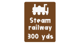
2201Distance ahead to a tourist attractionArt draft, not yet imported2203Direction and distance to a tourist attractionArt draft, not yet imported2204Direction and distance to a Tourist Information Point or CentreArt draft, not yet imported2205Sign on a primary or non-primary route indicating location of a Tourist Information Centre or PointArt draft, not yet importedno face
2206Tourist attraction aheadUnverified sourceno face
2207Tourist attraction (direction)Unverified source2208Direction to a tourist attraction indicated by a symbolArt draft, not yet imported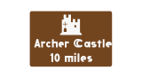
2209Distance ahead to a tourist attractionArt draft, not yet imported2210Junction ahead leading to or along a route passing through places of interestArt draft, not yet imported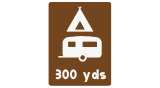
2301Picnic siteArt draft, not yet imported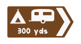
2302Direction and distance to a camping and caravan site as defined in the caption under diagram 2301Art draft, not yet imported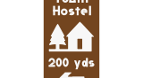
2303Sign on a primary or non-primary route indicating distance and direction to a hostelArt draft, not yet imported 2304Direction and distance to a hostel as defined in the caption under diagram 2303Art draft, not yet imported2305Sign on a primary or non-primary route indicating distance and direction to a picnic areaArt draft, not yet imported
2304Direction and distance to a hostel as defined in the caption under diagram 2303Art draft, not yet imported2305Sign on a primary or non-primary route indicating distance and direction to a picnic areaArt draft, not yet imported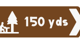
2306Direction and distance to a picnic areaArt draft, not yet imported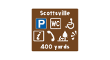
2307Sign on a primary or non-primary route indicating distance ahead to a parking place with public toilets that has facilities for disabled persons, Tourist Information Centre or Point, public telephone, picnic area and viewpointArt draft, not yet importedno face
2308Nature reserveUnverified sourceno face
2310Leisure facilityUnverified sourceno face
2311Sports stadiumUnverified sourceno face
2313Theme parkUnverified sourceno face
2314Wildlife parkUnverified sourceno face
2315Beach or coastal attractionUnverified sourceno face
2316Tourist trailUnverified source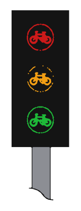
3000.2Traffic light signals for the control of vehicular traffic consisting solely of pedal cycles and electric scooters being used in a trialArt draft, not yet imported3000.7Traffic light signals as diagram 3000 with additional signals placed in any of the positions marked 1, 2, 3 and 4Art draft, not yet importedno face
3001Traffic signal with a box signUnverified source3001.2Green arrow to show the direction for vehicular traffic to take for inclusion in traffic light signals as described in Part 1Art draft, not yet imported3013Light signal for control of tramcars (diagram shows the light signal fully illuminated- see items 3 to 7 for the illumination of the signal to convey particular descriptions)Art draft, not yet imported3013.1Tramcar must not proceed beyond the stop lineArt draft, not yet imported3013.2Tramcar may proceed beyond the stopline and proceed straight aheadArt draft, not yet imported3013.3Tramcar may proceed beyond the stopline and proceed to the leftArt draft, not yet imported3013.4Tramcar may proceed beyond the stopline and proceed to the rightArt draft, not yet imported3013.5Tramcar must not proceed beyond the stop line except that, as respects a tramcar which is so close to the stop line that it cannot safely be stopped without proceeding beyond the stop line, it conveys the same indication as the aspect which was shown immediately before itArt draft, not yet importedno face
4002Nearside pedestrian demand unitUnverified source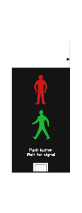
4003.1Nearside light signals and instructions for pedestrians at a pedestrian facility controlled by traffic light signalsArt draft, not yet imported4003.2Farside light signals for equestrian trafficArt draft, not yet imported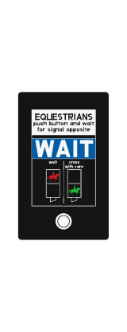
4003.3Instructions to horse riders above the push button control for calling up equestrian traffic phases at traffic light signalsArt draft, not yet imported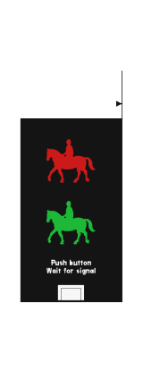
4003.4Nearside light signals and instructions for horse riders at an equestrian traffic crossing facility controlled by traffic light signalsArt draft, not yet imported4003.5Farside light signals for pedestrians, drivers of electric scooters being used in a trial and cyclists at a Toucan crossingArt draft, not yet imported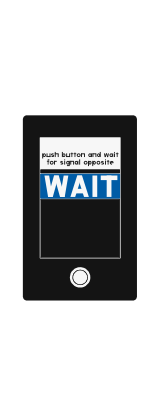
4003.6(a) instructions to pedestrians, drivers of electric scooters being used in a trial and cyclists above the push button control for calling up pedestrian and cycle phases at a Toucan crossing; or (b) instructions to cyclists above the push button control for calling up cycle phases at a crossing controlled by the traffic light signals provided for at item 3 or 4Art draft, not yet imported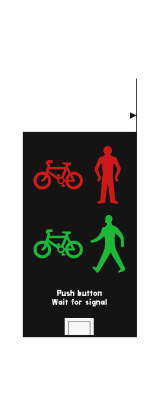
4003.7Nearside light signals and instructions for pedestrians, drivers of electric scooters being used in a trial and cyclists at a Toucan crossingArt draft, not yet imported